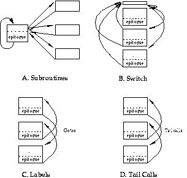
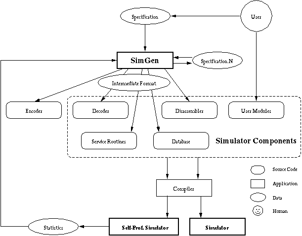
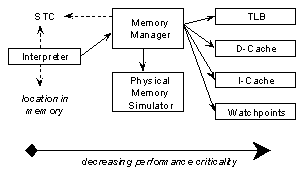
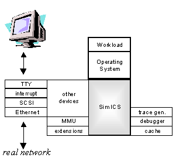
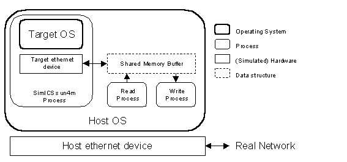

SimICS/sun4m: A VIRTUAL WORKSTATION
Peter S. Magnusson1, Fredrik Dahlgren2, Håkan Grahn3, Magnus Karlsson2, Fredrik Larsson1,
Fredrik Lundholm2, Andreas Moestedt1, Jim Nilsson2, Per Stenström2, Bengt Werner1
|
1 {psm,fla,am,werner}@sics.seSwedish Institute of Computer Science |
2 {dahlgren,karlsson,dol,j,pers}@ce.chalmers.se Department of Computer Engineering |
3 Hakan.Grahn@ide.hk-r.seDepartment of Computer Science |
Abstract
System level simulators allow computer architects and system software designers to recreate an accurate and complete replica of the program behavior of a target system, regardless of the availability, existence, or instrumentation support of such a system. Applications include evaluation of architectural design alternatives as well as software engineering tasks such as traditional debugging and performance tuning.
We present an implementation of a simulator acting as a virtual workstation fully compatible with the sun4m architecture from Sun Microsystems. Built using the system-level SPARC V8 simulator SimICS, SimICS/sun4m models one or more SPARC V8 processors, supports user-developed modules for data cache and instruction cache simulation and execution profiling of all code, and provides a symbolic and performance debugging environment for operating systems.
SimICS/sun4m can boot unmodified operating systems, including Linux 2.0.30 and Solaris 2.6, directly from snapshots of disk partitions. To support essentially arbitrary code, we implemented binary-compatible simulators for several devices, including SCSI, console, interrupt, timers, EEPROM, and Ethernet. The Ethernet simulation hooks into the host and allows the virtual workstation to appear on the local network with full services available (NFS, NIS, rsh, etc). Ethernet and console traffic can be recorded for future playback.
The performance of SimICS/sun4m is sufficient to run realistic workloads, such as the database benchmark TPC-D, scaling factor 1/100, or an interactive network application such as Mozilla. The slowdown in relation to native hardware is in the range of 25 to 75 (measured using SPECint95). We also demonstrate some applications, including modeling an 8-processor sun4m version (which does not exist), modeling future memory hierarchies, and debugging an operating system.
A target computer system typically runs a mixture of operating system and application code, which interact in a complex, fine-grained manner to solve the tasks at hand. This interaction between operating system and application, and between operating system and the underlying hardware, today constitutes a difficult domain in computer science and engineering. The overall performance of a system is largely determined by this interaction, and it is required to function correctly to provide a stable platform.
To explore this interaction in any detail is difficult, especially since designers are frequently interested in not just understanding an existing system, but to explore alternatives. A fully simulation-based approach has the advantage of essentially being able to model any architecture and gather any statistic. Since we are concerned with the software level in general, and in the interaction between software and key hardware resources in particular, the principal approach is that of instruction set simulation.
Running operating system code on simulators has long been a common practice in the computer manufacturing industry. Little of this work has been done in academia, and consequently general tools of this character have not been available to a broader community. Also, the techniques used have, to our knowledge, often been inefficient, with a focus on hardware development rather than making available a practical tool for operating system designers. Thus they would at most support small benchmarks, require expensive custom hardware, or require impractical running times or resources for usage. For similar reasons, the tools have had little, if any, support for performance tuning (such as profiling).
Foremost among published work is g88 (Bedichek 1990), which combined threaded code (Bell 1973, Klint 1981) with simulation of simplified devices. g88 could boot and run the Unix kernel using device drivers for these simplified device models. g88 could support debugging but not performance tuning, and had only limited support for computer architecture work.
To address these limitations we have designed a simulation platform on top of which it is possible to execute and analyze unmodified complex application and operating system software with a decent performance. This paper describes the simulation platform and demonstrates its efficiency by analyzing the performance of a database application that is run on a 4-CPU multiprocessor simulator that models the sun4m architecture.
The contributions of this paper are twofold. First, we implement a full system model built on the SimICS simulator, allowing the advanced debugging and profiling features of SimICS to be applicable to operating system work. Second, we implement a system level simulator that runs completely unmodified operating system binaries, actually booting from dumps of the partitions that would boot a target machine. As far as we are aware, this has never been described in the open literature.
The rest of this paper is organized as follows. In Section 2, we present instruction set simulation as a general technique. In Section 3 we present SimICS, our simulator kernel, which constitutes a flexible platform on which a complete target system simulator can be built. The sun4m architecture is such a target, and in Section 4 we describe the principal components, that together with SimICS forms a full simulator. We describe a few example uses of the simulator in Section 5 and discuss its performance in Section 6. We discuss previous and related work in Section 7, with a particular emphasis on SimOS, a system level simulator with similar capabilities and goals as SimICS. We conclude in Section 8.
Instruction set simulators run a program by simulating the effects of each instruction on a target machine, one instruction at a time. Instruction set simulators are attractive for their flexibility: they can, in principle, model any computer, gather any statistic, and run any program that the target architecture would run, including the operating system. They easily serve as back-ends to traditional debuggers as well as architecture design tools such as cache simulators.
For their flexibility, instruction set simulators have long been popular in computer architecture research. There they help designers understand the tradeoffs involved in architectural decisions by simulating the effects on user programs.
Naturally, this flexibility comes at a cost—instruction set simulators are often slow, easily over 3 orders of magnitude slower than native execution. Such poor performance severely hampers their practicality, limiting them to toy benchmarks or very patient users. This has prompted several efforts to improve the performance of traditional simulation or to find alternate methods. This work has met with some success: several fast instruction set simulators have been developed over the last several years (Bedichek 1990 and 1995, Veenstra 1994, Cmelik and Keppel 1993, Witchel and Rosenblum 1996).
Besides the issue of performance, a full implementation is also complicated by the difficulty of recreating the execution environment. To run a given program, either we can emulate the underlying operating system faithfully, or we can bypass this difficulty entirely by running the operating system directly.
Unfortunately, the execution environment of modern systems is large. Running the operating system as an "application" is the obvious alternative, but is challenging since this requires faithful emulation of the system-level architecture. Earlier work along these lines therefore replaced complex devices with pseudo devices—devices with simple behavior (Bedichek 1990, Magnusson 1993a, Rosenblum et al 1995, Werner et al 1997).
There are several problems with not implementing proper device simulators. Firstly, they are frequently significant to overall system performance. Especially in the light of ever improving microprocessor speeds, I/O performance is important and becoming more so every day. Since our purpose is to improve the overall performance of systems, we cannot exclude these devices.
Secondly, an important use of this class of tools is to support the development and tuning of hardware dependent components of the operating system, and this of course requires an accurate emulation.
Finally, from a practical standpoint of distributing and supporting a simulator, reliance on pseudo devices adds the complication of needing to distribute a modified operating system. This may require source code access and/or special licenses for the user, which can be difficult for the research community. In addition, it is a task that needs to be repeated for each operating system that is intended to run on the simulator.
SimICS is an instruction-set simulator developed at the Swedish Institute of Computer Science (SICS). It simulates one or more SPARC V8 processors, and supports multiple physical address spaces, system-level code, and emulation of the SunOS 5.x ABI for direct analysis of user-level programs. The performance of SimICS is acceptable even for large problems, with a slowdown of around 25-75 per simulated processor. SimICS itself is sequential, allowing it to be fully deterministic, a crucial feature for an instrument.

SimICS allows a program to be studied interactively, both for debugging and for profiling. Of primary interest, SimICS can profile data and instruction cache misses, translation look-aside buffer misses, and instruction counts. These figures can be weighted, sorted, and related to source code lines, allowing the programmer to quickly zoom in on the portions of code that consume resources.
SimICS has evolved over 7 years, and has absorbed almost 20 man-years of effort.
The core of SimICS is a variation of threaded code (Bell 1973). Interpreters execute programs by running a central fetch-decode-execute loop. Some simple design ideas improve performance. Firstly, the target program, in object code format, is translated to an intermediate format, which is in turn interpreted. Whereas the target instruction set is designed for interpretation by hardware, the intermediate format is designed to be easy for software. During execution, this intermediate code is then cached. A variety of data structures keeps track of when to regenerate intermediate code.
For each intermediate format instruction there is a small segment of code, called a service routine, that emulates the effects of that instruction, as well as performing any administrative tasks for the simulation, such as event queues, instruction pipeline, etc.
There are several ways of dispatching these service routines; Figure 1 shows the four most common. These are: subroutines called from an inner loop, a large "switch" statement, directly addressable labels, and function calls relying on tail call optimization. SimICS primarily uses addressable labels using GCC (Stallman 1992), but can also run using tail recursion.

The process of implementing, and supporting, an industrial-grade complete instruction set simulator is a significant task. An instruction set will typically require several hundred different service routines. The core interpreter of SimICS is therefore implemented using a metatool, SimGen, which automates a range of tasks related to interpreter design (Larsson et al 1997). SimGen works from a simulation-oriented specification of the target instruction set, see Figure 2. Currently, it will design the intermediate format, and then generate a decoder, disassembler, encoder, and set of service routines. Metatools such as SimGen have been in use for some time, the contribution of SimGen is that it can generate faster interpreters than is practical to do manually. One way it accomplishes this is by generating versions of the interpreter that gathers service routine usage statistics, which it can then take as input to regenerate a faster interpreter.
SimGen essentially solves two porting issues. Firstly, the support of new instruction sets is greatly simplified, since SimGen works from a high-level specification. An earlier, handwritten SPARC V8 interpreter (Samuelsson 1994) consisted of some 10,000 lines of C macros, and was reimplemented using only 2,000 lines of specification. SimGen has also been used to generate interpreters for different versions of the APZ212, a proprietary embedded CISC processor (Egeland 1995). The result is now a component in Ericsson's test environment, a product used by several thousand software developers.
Secondly, it can generate different interpreter cores from the same specification. For example, SimGen can generate interpreter cores corresponding to any of the alternatives shown in Figure 1. The performance for the various alternatives varies with processor/compiler combination, as well as varying over time. Also, different compilers support different combinations. For example, GCC 2.7 does not support tail call elimination, and directly addressable labels cannot be expressed in ISO C.
Most service routines are simple, typically 10-30 host processor instructions. This sets an upper limit on performance for this technique of about 20 times slower than native execution. To obtain significantly better performance, optimized runtime code generation techniques can be used, and several prototype versions of SimICS have supported them (Magnusson 1993b, Christensson 1997). In practice, such techniques are not yet superior to the interpreter design in SimICS. A full discussion of this interesting, but parenthetical, issue is beyond the scope of this paper.
SimICS is primarily a functional simulator, meaning that it does not model timing at a detailed level such as CPU pipelines. A simulator such as SimICS can, however, complement a cycle-accurate model by providing subtraces consisting of a sequence of hardware events that derive from coarse elements in the target system (caches, CPUs, TLBs, etc). In other work, we've demonstrated the efficacy of this division of labor (Werner and Magnusson 1997). It requires that a simulator such as SimICS efficiently keep track of non-volatile state, i.e. processor state that changes slowly, such as cache contents. The objective of SimICS itself is thus primarily (a) to model the target system sufficiently accurately to run any software and (b) to efficiently model non-volatile state with high granularity.
A crucial component of a system level simulator is the simulation of memory. Memory operations are difficult to handle, since not only are they both frequent and complex, but in a simulator we also wish to gather additional information. A significant portion of the design effort and complexity in SimICS lies in how it simulates memory (Magnusson and Werner 1997).
Briefly, SimICS collapses a range of operations into a common (optimistic) path using a Simulator Translation Cache (STC). Figure 3 illustrates the principle. The service routine for the memory operation will perform an inlined lookup in the STC. If it "hits" in this data structure, it can proceed directly. The inlined lookup is carefully designed and consists of nine host (SPARC) instructions. This implicitly or explicitly includes a physical to logical translation, a TLB lookup, a protection check, a watchpoint check, an alignment check, a data cache lookup, location of the physical storage in the simulator, and a profile count of the target address.

Figure 3 - Memory Simulation
The instruction cache is supported in a similar manner, but is expanded to handle a from-to jump cache, so as to support not only cache modeling, but accurate profiling, a variety of breakpoint types, and, in future, support for various branch prediction models. Because of it's similarity to the STC, this design is called the I-STC, and is described further in (Magnusson 1997).
Figure 4 shows a schematic overview of SimICS as a platform. SimICS itself consists of an interpreter core which can be extended in a variety of directions using published programming interfaces. We take advantage of dynamically loadable modules to run-time extend SimICS in this manner.
These extensions are primarily of two types. First, devices can be added to build a full system. Such device modules load themselves as generic device objects, and the user can instantiate them at the command line (SimICS has a simple command line interface). Devices are memory-mapped, i.e. once instantiated SimICS will redirect any memory accesses to the requested physical memory region to that device. Devices include Ethernet, to communicate with a real network, a console, for interactive serial terminal sessions, and disk subsystems. The principal devices needed for the sun4m architecture that we implemented are described in Section 4. The second important extension type is memory hierarchy modules, allowing the user to add new cache models.
For software engineering tasks, SimICS can run as a backend to a symbolic debugger. We use a modified version of GDB 4.16 as our preferred interface. In this mode, SimICS will fake stack contents, manage multiple address spaces, etc.

Figure 4 - SimICS Platform
The essential benefit of running within a simulator is that the complete state is available for inspection. The design of SimICS has largely focused on techniques for gathering detailed information on the execution. Probably the most useful feature is profilers.
A profiler gathers and presents statistics that are related to a (physical) memory address range. A simple example is an execution profiler, which counts how many times an instruction at a particular address has been executed.
Profiler values are shown whenever the user lists source code. The profilers currently supported by SimICS include those listed in Figure 5. Profilers support building various generic analysis tools on top of them. For example, the
prof-weight command produces the output in Figure 6. Each profiler has an associated weight, such as $SIM_TLB_MISS_WEIGHT. The user can interactively change weight values. This allows the user to explore a very large set of data and focus on one issue at a time. For example, in Figure 6, the TLB miss weight has been set to 10 ("Column 4").
(a) instruction cache misses (b) write cache misses (data) (c) read cache misses (data) (d) translation look-aside buffer misses (e) branches to the instruction (f) branches from the instruction (g) count of instruction execution (h) flag for instruction execution (i) reads from memory address (j) writes to memory address |
Figure 5 - Simics profilers
The
prof-weight command thus calculates a linear sum over the entire memory, sorting and displaying the largest values. In the figure, we have asked SimICS to calculate the weights in address intervals of 32 bytes and to display details for the top 20.The example is from an analysis of the infamous SPECint92 benchmark eqntott. By using SimICS in the role of a traditional profiling tool, we improved the performance of eqntott by a magnitude. The profile information can also be related to code, as we will show in Section 5.3.
(gdb-simics) prof-info
Active profilers, from 'left to right':
Column 1: Instruction cache misses caused by program line
($SIM_INSTR_MISS_WEIGHT = 10.000000)
Column 2: Cache misses (writes) caused by program line
($SIM_WRITE_MISS_WEIGHT = 1.000000)
Column 3: Cache misses (reads) caused by program line
($SIM_READ_MISS_WEIGHT = 8.000000)
Column 4: TLB misses passed on to Unix emulation
($SIM_TLB_MISS_WEIGHT = 10.000000)
Column 5: Number of (taken) branches *to* the code block
($SIM_TO_WEIGHT = 0.000000)
Column 6: Number of (taken) branches *from* the code block
($SIM_FROM_WEIGHT = 1.000000)
Column 7: Count of instruction execution (based on branch arcs)
($SIM_PC_WEIGHT = 1.000000)
Column 8: Number of addresses from which instr have been fetched
($SIM_INSTR_WEIGHT = 0.000000)
(gdb-simics) prof-weight 32 20
Weighted profiling results:
Physical Virtual ( source )
0x00005c20 0x00011c20 (pid 1001) 518199272.00
0x00005c40 0x00011c40 (pid 1001) 366859495.00
0x00005c60 0x00011c60 (pid 1001) 335490415.00
0x00005c00 0x00011c00 (pid 1001) 38342452.00
0x00005d20 0x00011d20 (pid 1001) 33332216.00
0x000084a0 0x000144a0 (pid 1001) 21651844.00
0x00005d40 0x00011d40 (pid 1001) 20545152.00
0x00005c80 0x00011c80 (pid 1001) 9771702.00
0x000084c0 0x000144c0 (pid 1001) 7240831.00
0x00005be0 0x00011be0 (pid 1001) 5890173.00
0x00006460 0x00012460 (pid 1001) 5768754.00
0x00005ca0 0x00011ca0 (pid 1001) 4945636.00
0x00008480 0x00014480 (pid 1001) 4405064.00
0x000084e0 0x000144e0 (pid 1001) 4155135.00
0x000064e0 0x000124e0 (pid 1001) 4059607.00
0x00017b20 0x00023b20 (pid 1001) 3921297.00
0x00008900 0x00014900 (pid 1001) 3569070.00
0x00005ba0 0x00011ba0 (pid 1001) 3353840.00
0x00008c60 0x00014c60 (pid 1001) 3244719.00
0x00008500 0x00014500 (pid 1001) 3215813.00
Sum: 1397962487.00 (90%)
Not shown: 160930057.00 (10%)
System total: 1558892544.00
|
Figure 6 - prof-weight listing
Work is currently in progress with extending SimICS to support various scripting languages. We use SWIG (Simplified Wrapper Interface Generator) to generate the glue code between the script interpreter and SimICS, making it easy for us to experiment with more than one language. Python and Tcl are the ones that SimICS currently support. With a script language, users can write their own commands, for example to traverse data structures in the source of a program being run. Figure 7 shows an example of a Python function that lists all processes in Solaris, printing their pid, MMU-context and name. In the example,
sym is a module that handles symbolic information. The two functions val and str in this module return the value and the string, respectively, for a specified symbol.
proc = sym.val("practive")
while proc != 0:
pr_str = "((proc_t *)0x%x)" % proc
pid = sym.val("%s->p_pidp->pid_id" % pr_str)
cmd = sym.str("%s->p_user->u_comm" % pr_str)
ctx = sym.val("((srmmu_t *)%s->p_as->a_hat
->hat_data[0])->s_ctx" % pr_str)
print "pid = %3d (ctx = %3d) %s" % (pid, ctx, cmd)
proc = sym.val("%s->p_next" % pr_str)
pid = 234 (ctx = 20) "mozilla"
pid = 233 (ctx = 19) "mozilla"
pid = 231 (ctx = 3) "csh"
pid = 227 (ctx = 22) "ttymon"
pid = 225 (ctx = 16) "sh"
pid = 224 (ctx = 2) "sac"
pid = 199 (ctx = 13) "utmpd"
pid = 189 (ctx = 18) "sendmail"
pid = 184 (ctx = 14) "nscd"
pid = 178 (ctx = 15) "cron"
pid = 165 (ctx = 4) "syslogd"
pid = 161 (ctx = 12) "automountd"
pid = 146 (ctx = 9) "lockd"
pid = 144 (ctx = 7) "statd"
pid = 139 (ctx = 10) "inetd"
pid = 110 (ctx = 11) "ypbind"
pid = 99 (ctx = 8) "keyserv"
pid = 97 (ctx = 5) "rpcbind"
pid = 26 (ctx = 6) "dhcpagent"
pid = 3 (ctx = 0) "fsflush"
pid = 2 (ctx = 0) "pageout"
pid = 1 (ctx = 1) "init"
pid = 0 (ctx = 0) "sched"
|
Figure 7 - Scripting Example
As a tool, SimICS has a variety of uses. The methods of validation differ with application. For example, for coarse grain characterization of a workload, internal cross-checks occur in SimICS that can be consulted by the end user. These give a reasonable assurance that aspects such as instruction count is accurate. Each cache model used offers a new validation problem. If the cache model corresponds to an existing system, we can validate by comparing with hardware traces, as has been done with such applications (Werner and Magnusson 1997). If the cache model is of a future design, then SimICS does not offer a silver bullet. The principal method employed is to compare a specialized cache model with a generic (parameterized) model, leveraging off the fact that SimICS, being completely deterministic, can exactly duplicate the workload.
In this section, we describe the most significant components of the simulated sun4m architecture, namely disk (SCSI) and network (Ethernet), as well as a mechanism for recording and playing back I/O traffic.
We emphasize that all devices were developed to the point of fidelity where both of our target operating systems, Linux 2.0.30 and Solaris 2.6, would boot and run completely unmodified.
Currently, we short-circuit the first phase of the boot process, namely the boot PROM, which we have reverse-engineered and written from scratch, rather than dump PROM contents to a binary as we did in earlier work (Magnusson 1993a). There were two principal reasons for this: we wish to be able to distribute the whole environment, and the PROM is copyrighted; and we are not interested in the error checking and initialization aspect of device fidelity that is exercised by the PROM. Our fake PROM works in a simulator-"aware" fashion, with support for parsing a target architecture description, thus simplifying handling of target variations.
SimICS exports an interface for adding new devices. Devices are loaded and instantiated dynamically. There is also a variety of facilities for debugging either a device driver, a device simulator, or both. This includes separate, dynamic history buffers for all devices, where the device simulator can log a descriptor of the effects of the command.
We modelled the FAS100 chip prescribed by the sun4m architecture. SCSI is relatively tricky to model properly since it is highly asynchronous. Disk transactions are handled in multiple steps, and several different tasks can be outstanding at any time. As a consequence, the SCSI simulator is by far the most complex device, requiring 4,500 lines of C.
Disk contents are modeled by taking dumps of real partitions. These dumps are naturally rather large, and are treated as read-only input to the simulator. Changes resulting from SCSI writes are kept internally in the simulator in a delta structure, which can be read or written to a file. This allows multiple simulator sessions to use the same set of original dump files. It also simplifies configuration management: to set up a particular session, you boot the operating system on the simulator, log in, do system administration or install software using 'ftp' or similar, shut down the simulated operating system in an orderly manner, and then save the delta file. This new delta file can then subsequently be used for new runs.
The sun4m model in SimICS supports connectivity to a real network on the Ethernet level. The model contains a simulated Ethernet device mapped into the memory space of the simulated machine. The simulated device is given the same Ethernet address as the real interface on the host machine. To separate packets destined for the target and the host OS, the IP address is checked. When started, the code for the Ethernet device spawns two processes running as root. One is used for reading and one for writing raw Ethernet frames through the network interface on the host machine. The read process filters out all packets for the simulated machine, i.e. IP packets and ARP requests containing the simulated IP address. The host OS also receives these packets, but throws them away since the IP address does not match. The write process simply sends frames to the network. We use the Packet Capture library (libpcap) from LBNL to send and receive Ethernet frames from within user processes. Figure 8 shows the architecture of the network connection.

Figure 8 - Network Support Overview
We can also use DHCP, which allows us to create boot disk snapshots that are independent of the local network, and thus transportable across domains.
We have run a variety of network applications on the simulated machine with success: rlogin, ftp, automount, X11, etc. By using X11 we can run applications with graphical interfaces, without having to simulate a display device. Also, ftp and nfs are two simple ways to get program files into the simulated environment.
All asynchronous input for the simulated machine can be saved for later playback. This currently includes tty (keyboard) and network data. By saving and replaying input, the same simulation session can be repeated with identical behavior.
All external sources of input are polled by SimICS and the data is sent to a special device, called the recorder. The recorder works in either recording or playback mode. In recording mode, the recorder saves the data to a file together with a timestamp before passing it on to the appropriate device. In playback mode the polling functionality is disabled, instead the recorder reads data from a file, and then passes it on as normal.
Using this recording facility, sessions with asynchronous events can easily be debugged. First, they are run with live input that is recorded. Then, in playback mode, code can be single-stepped and the simulation can be interrupted for inspection of state without disturbing the simulated session.
SimICS/sun4m is currently being used to support a range of activities. In this section, we present some example uses.
To demonstrate the capability of SimICS/sun4m in handling large working loads, we made a few simple measurements on booting and running Solaris 2.6. In the first example we ran for 26 billion simulated instructions, which took roughly 3 hours of simulation time on a 250 MHz UltraSparc.
In Table 1 we see the result from this first run, an interactive session consisting of four phases. First, the operating system booted on a single processor system. Next, we run the graphics program 'xv', doing a simple image manipulation. In the third phase, the system is idling, with only system processes running, and last we run 'ftp' reading several megabytes of data, followed by a Netscape Communicator session. The numbers give a coarse characterization of what is happening in the machine. We also note that the simulated mips figure falls with an increased load, as exceptions and memory writes become more frequent, events that are expensive both on the target machine and the simulator.
In the second run, shown in Table 2, we booted the Solaris 2.6 operating system on a 4-processor sun4m system. As we can see from the number of writes as well as the exception count, the work appears well-balanced over all processors. CPU 0 does some more memory operations, which can be expected since it is the processor running the initial boot sequence. We reach a multi-user login prompt after 1,03 billion instructions, compared to 1,40 billion in the single processor case, indicating some parallel work during the boot process.
|
Phase |
Time (sec) |
Instructions |
mips |
Instr/exception |
Instr/read |
Instr/write |
|
Boot |
2,100 |
1,403,150,579 |
0.67 |
566 |
5.36 |
12.4 |
|
xv |
1,560 |
5,708,931,035 |
3.66 |
6,547 |
4.12 |
140.1 |
|
Idle |
420 |
2,057,365,964 |
4.89 |
13,048 |
4.03 |
261.2 |
|
Ftp, NS |
7,080 |
16,583,003,191 |
2.34 |
2,856 |
4.14 |
68.5 |
| Table 1 - Large Unipro Workload | ||||||
|
CPU 0 |
CPU 1 |
CPU 2 |
CPU 3 |
|
|
Reads |
221,240,785 |
200,868,331 |
202,759,327 |
203,967,084 |
|
Writes |
88,717,788 |
59,773,968 |
64,189,093 |
63,220,767 |
|
Exceptions |
25,201 |
30,774 |
34,610 |
30,693 |
|
Instructions |
1,028,765,700 |
1,028,765,700 |
1,028,765,700 |
1,028,765,700 |
| Table 2 - Parallel Boot of Solaris 2.6 | ||||
One important application of the SimICS/sun4m platform is to use it for evaluating design alternatives for multiprocessors. As a case study, we have evaluated the memory hierarchy of a shared-memory multiprocessor running a database application. The multiprocessor has four nodes, each containing a processor with a two-level cache hierarchy, a memory module, and a network interface. The memory modules of all nodes constitute the global, shared physical memory space, so that any processor can access any memory module.
On a cache miss, a block of memory is requested from the memory module where it is allocated. The ideal case would be if all data accessed by the processor is allocated in the memory module within the same node, instead of having to be sent over the network. While this can be the case for code and private data (such as the stack), it is near impossible for data shared between multiple nodes. One technique to reduce the amount of requests to memory in other nodes would be to add a remote cache (Zhang and Torrelas 1997), i.e. an additional level of cache entirely used to cache data from other nodes.
When using the SimICS/sun4m platform to evaluate the effectiveness of adding remote caches as a complement to the ordinary two-level cache hierarchy, a memory system simulator of the target system is developed as a separate module using a predefined interface to SimICS. When SimICS is run, the memory system simulator is loaded, and the memory references will now become visible to it. In addition, the memory system simulator will also be able to control the execution of each processor, so that a correct processor stall time will be modeled according to the latencies of the memory system.
Using this methodology, we have evaluated a four-node multiprocessor with and without remote caches. The simulated multiprocessor executes the same operating system and database handler binaries as we are running on our real workstations. In the experiments, we used Linux 2.0.30, which supports up to four processors, and the PostgreSQL v.6.1 client-server database handler from Berkeley (Stonebraker et al 1990).
The application of the database handler was query #6 of TPC-D with the scaling factor of 1/100 (20 MB of database tables). The multiprocessor was used as a database server, executing the same query on all processors individually in parallel. The database data is originally on disk, and the pages are allocated when accessed so that they will be distributed among the nodes. The sizes of the L1 and L2 caches were 16 KB (direct-mapped) and 512 KB (4-way set-associative), respectively.
We measured the total number of requests over the network for different sizes of the remote cache. The number of network messages was reduced by only 1.0% for a remote cache of 1 MB, and 1.2% for a remote cache of 2 MB. Experiments using scientific benchmark applications have indicated a much larger gain from using remote caches, so we decided to analyze the effects in more detail. The amount of data accessed by each node is 17 MB. By analyzing the temporal locality of the data, i.e. how much the data is re-used after it has been accessed by the node for the first time, we discovered that 88% of the memory blocks are not reused after they have been replaced from the L1 cache. We traced these references back to their sources and found that 95% of them originated from only 16 instructions in memcpy() in the kernel. Most of them were used by a sequential scan operation in the database application.
The sun4m architecture is only defined for up to four processors, which is an assumption explicitly used in the source code of Linux. In order to do architectural evaluations of systems with more than four processors using the Linux OS, we used the SimICS/sun4m platform to extend both Linux and the sun4m architecture to be able to support up to 16 processors. In terms of Linux, it could be efficiently debugged using the SimICS platform. As a result, we were able to execute the same database system binaries (PostgreSQL running TPC-D) on a 16-node multiprocessor, and evaluate effects of novel memory system designs for the new architecture as well as the effects on the modified operating system such as lock contention.
As the above examples show, the SimICS/sun4m platform is capable of evaluating different design alternatives as well as explore novel architectural features and organizations for existing operating systems and applications. Moreover, it is also an efficient platform for modifying programs as well as operating systems and evaluate the effects of such modifications. Since the platform can execute any binary available for the Solaris 2.6 or Linux 2.x for the sun4m architecture, we are also able to evaluate commercial applications for which we do not have the source code. However, when the source code is available as in the above example, we are able to trace effects in the hardware/software interaction back to the source code of the application program as well as system software.
To demonstrate the combination of user and system mode debugging, we have begun evaluating Mozilla running on Solaris, all on top of SimICS. We use Mozilla 5.0b1, a binary that when statically linked with debug information is over 60 MB. The support for symbolic debugging in SimICS handles multiple memory contexts, allowing the user to debug several programs, including the operating system, at the same time. In the following example we did measurements on Mozilla, starting at a push on the reload button and ending when the page (
http://www.sics.se) was fetched from a real server and fully rendered in a window on another machine.
0x2043000 53833494 0.251324 0x0e89000 53052056 0.247676 0x3188000 13675682 0.0638455 0x2046000 12303672 0.0574402 0x288f000 7453213 0.0347956 0x2001000 7047036 0.0328994 0x158c000 6494650 0.0303205 0x2034000 4365093 0.0203786 0x2112000 4327131 0.0202014 0x2006000 3245785 0.0151531 ... |
Figure 9 - Top page usage by Mozilla
The reload needed a total of 214 million SPARC instructions to complete. Figure 9 shows a list of pages with the highest count of executed instructions, and the fraction of the total number. As the list shows, 50% of all instructions executed can be found on only two pages, the rest are spread over 1059 other pages. A reverse memory translation (SimICS command
srmmu-reverse) finds the first page in context 0, mapped by the kernel, and the second page in context 19, mapped by Mozilla. Zooming in on these pages reveals the idle() function in Solaris and the function il_quantize_fs_dither() doing Floyd-Steinberg dithering in Mozilla. Figure 10 shows some lines from the source, with profiling information, for the latter function. The profiling values shown are, from left to right: (a) I-cache misses, (b) D-cache write misses, (c) D-cache read misses, (d) branches to the block, (e) branches from the block, (f) count of instructions executed, and (g) a count of assembler instructions in the block. The cache statistics reflect a 16D/20I first-level cache configuration, 4-way and 5-way respectively with 32-byte cache lines. Note that this is only an example. To find out where Mozilla actually spends most of the time for a task, the command prof-weight should be used, taking into account the time for misses in caches and the TLB. Also, the binary should be compiled with more optimization that in this example.
(a) (b) (c) (d) (e) (f) (g)
244 179 0 0 282 0 564 2 dir = 1;
245 /* => entry before first column */
246 272 0 0 0 0 1974 7 r_errorptr = cquantize->fserrors[0] + x_offset;
247 0 0 0 0 0 1974 7 g_errorptr = cquantize->fserrors[1] + x_offset;
248 70 0 0 0 0 1974 7 b_errorptr = cquantize->fserrors[2] + x_offset;
249 }
250
251 /* Preset error values: no error propagated to first pixel ...
252 54 0 0 281 0 1689 3 r_cur = g_cur = b_cur = 0;
253
254 /* and no error propagated to row below yet */
255 0 13 0 0 0 1689 3 r_belowerr = g_belowerr = b_belowerr = 0;
256 0 0 0 0 0 1689 3 r_bpreverr = g_bpreverr = b_bpreverr = 0;
257
258 325 0 0 270261 270803 1085464 8 for (col = width; col > 0; col--) {
...
...
267 1 0 3900 270283 0 2432160 9 r_cur = RIGHT_SHIFT(r_cur + r_errorptr[dir] + 8, 4);
268 43 0 7987 60 0 2432160 9 g_cur = RIGHT_SHIFT(g_cur + g_errorptr[dir] + 8, 4);
269 1 0 2841 55 0 2432160 9 b_cur = RIGHT_SHIFT(b_cur + b_errorptr[dir] + 8, 4);
|
Figure 10 - Lines from the il_quantize_fs_dither() function with profiling data
The performance of a simulator is critical to its practicality. Measuring system level performance is difficult since it requires duplicating the workload. Let us first begin with an uncomplicated performance measurement, namely running in user mode on the simulator and comparing the execution time of SPECint95 programs on target and host, using the train data set. In user mode, SimICS emulates SunOS 5.x system calls using a compatibility layer.
Table 3 shows the resulting relative performance of SimICS over native execution. The timings were performed on an Ultra Enterprise, with the median of five time measurements shown (we've omitted compress since its native execution time was too small). The table shows a range of 26-75 in performance for two configurations of SimICS.
The first configuration, Sim 1, is with infinite data and instruction caches. In the second configuration we simulate a small, on-chip cache with 16kbyte 4-way set associative data cache and a separate, 20kbyte 5-way set associative instruction cache, corresponding to the SuperSPARC processor's on-chip caches, and a 64-entry unified TLB. All simulation runs generated full profiling (listed in Figure 5).
As the caches get smaller, the frequency of expensive events increases causes our slowdown to deteriorate. The baseline performance with minimum activity is close to the expected peak performance of the interpreter technique that we use, approximately 20. The performance loss for more realistic resource restrictions remains reasonable, within a factor of three of peak.
The mips numbers in Table 3 can be compared with the numbers given earlier in Table 1. We see that the ranges in raw interpreter performance is similar, leading us to conclude that the slowdown range of 26-75 is also representative for the full sun4m simulation environment.
|
caches |
go |
m88ksim |
gcc |
li |
ijpeg |
perl |
vortex |
|
|
Native execution (sec) |
N/A |
3.2 |
0.5 |
8.1 |
1.0 |
8.3 |
14.5 |
13.0 |
|
Native MIPS |
160 |
260 |
150 |
190 |
240 |
160 |
190 |
|
|
Sim 1 (sec) |
Infinite |
84.5 |
19.2 |
267.7 |
33.0 |
216.8 |
574.5 |
491.8 |
|
MIPS |
6.0 |
6.9 |
4.6 |
5.6 |
9.2 |
4.1 |
4.9 |
|
|
Slowdown |
x26 |
x38 |
x33 |
x32 |
x26 |
x40 |
x38 |
|
|
Sim 2 (sec) |
16k/20k |
123.9 |
23.9 |
545.9 |
52.9 |
257.6 |
810.1 |
980.8 |
|
MIPS |
4.1 |
5.5 |
2.3 |
3.5 |
7.7 |
2.9 |
2.5 |
|
|
Slowdown |
x39 |
x48 |
x67 |
x52 |
x31 |
x56 |
x75 |
|
| Table 3 - SimICS Performance | ||||||||
System level simulation for performance modeling is a longstanding tradition in industry. See, for example, (Canon et al 1979) for some early work. The first corresponding work in academia that we know of is the implementation of g88, which partly originated in industry. It was subsequently placed in the public domain and the design details published (Bedichek 1990). g88 modeled a uniprocessor M88100-based system with a mixture of real and pseudo devices, and could boot an operating system (Unix). gsim, the predecessor to SimICS, extended g88 to include support for multiple processors with shared physical memory (Magnusson 1992 and 1993a).
SimICS is a rewrite of gsim, primarily to model the SPARC architecture, but also to implement a faster, more portable interpreter core, as well as provide a more structured environment for system level simulation research in general.
A more recent tool, SimOS, models a MIPS-based multiprocessor (Rosenblum et al 1995 and 1997, Witchel et al 1996). SimOS can boot and run Irix. Newer versions of SimOS model other processors, such as the Alpha (Barroso et al 1998).
Both SimOS and SimICS have pursued similar goals and have thus, inevitably, arrived at similar solutions on many issues. For instance, both tools allow adding end-user memory hierarchy models, support copy-on-write disk images, can run off a local network as a virtual workstation, and provide tools and hooks for non-intrusively studying the behavior of the workload.
However, SimOS and SimICS have emphasized different aspects of simulation in pursuing performance. Both SimICS and SimOS are designed with hybrid techniques in mind, i.e. the intention is to model different sections of an execution at different levels of accuracy, thus gaining in performance but, using various sampling techniques, losing only marginally in accuracy. SimOS might thus have three CPU simulators, where the first focuses on quickly booting the OS, the second on warming the caches, and the third on modeling processor pipelines, etc (Rosenblum et al 1995). The middle stage is needed since warming caches requires long traces. SimICS assumes that this middle stage will be the principal bottleneck in using the tool, and has thus focused on fast modeling of cache hierarchies (Magnusson et al 1995), which can complement a more detailed processor model (Werner et al 1997).
The performance goal of SimICS is to be fast when gathering detailed information on common hardware events. Today this includes a full profile of TLB, data cache, and instruction cache misses as well as instruction execution count, all at the granularity of single instructions. This information gathering is all subsumed in the 31-75 slowdown range (median 52) given earlier ("Sim 2"). The closest level of granularity and speed combination reported for SimOS would indicate a slowdown of around 130 (Herrod 1998a) for similar work (1). This SimOS performance figure is for a large (1 Mb) second level cache, which stresses the simulator significantly less than the 16K/20K D/I caches used for the SimICS measurement. This level is more comparable to the "Sim 1" level above, with a slowdown of 26-40. In addition, SimOS does not maintain an execution profile. So despite providing both more detail and under a higher pressure of event frequency, SimICS is approximately 3 times faster than SimOS.
The SimOS instrumentation, on the other hand, is implemented in a more general manner. For example, SimOS supports general annotations allowing arbitrary script routines to be triggered by a variety of hardware events. This is a powerful tool for exploring program behavior. It allows the user to introduce problem-specific semantics for classifying hardware events. Thus, the performance advantage of SimICS over SimOS is largely an effect of a specialized approach beating a general approach. We are in the process of adding similar functionality to SimICS, and believe that this will not hamper the current specialized tools.
(1)Note that this performance is different from what is reported in (Witchel and Rosenblum 1996). The SimOS group found it worth trading off some of Embra's speed for maintainability, ease of debugging, and improved functionality (Herrod 1998b). This estimate is thus based on current SimOS behavior, namely a slowdown of 38-49 for "rough characterization mode" compounded by an overhead of 284% for classifying the hardware events.We have presented a system level simulation environment that mimics the sun4m architecture from Sun Microsystems with sufficient fidelity to run full operating system workloads directly from disk partition dumps, including Linux 2.0.30 and Solaris 2.6. The environment furthermore supports symbolic debugging, performance tuning, and memory hierarchy evaluation tasks. The overall performance is better than two magnitudes slower than native execution, which is sufficient to run realistic benchmarks, including SPECint95 and TPC-D.
We expect SimICS/sun4m, and future environments like it, to play a significant role in both computer architecture and operating system design work.
Magnus Christensson got Linux 2.0.30 to boot on SimICS at SICS, and also ported SimICS to Linux. Björn Grönvall graciously gave of his time to explain a variety of Unix esoterics. This work has been supported by the SICS Framework Programme, Sun Microsystems, and Ericsson Infotech.
SimICS/sun4m is available for the research community at "http://www.sics.se/simics". The current distribution includes Linux boot disk images. This package is also included on the conference CD-ROM.
Bibliography
Anderson, J. M., L. M. Berc, J. Dean, S. Ghemawat, M. R. Henzinger, S-T. A. Leung, R. L. Sites, M. T. Vandevoorde, C. A. Waldspurger, and W. E. Weihl. 1997. Conitinuous Profiling: Where Have All the Cycles Gone? Technical Report, 1997-016a, Digital Systems Research Center, September.
Barroso, L. A. and K. Gharachorloo. 1998. System Design Considerations for a Commercial Application Environment First Workshop on Computer Architecture Evaluation Using Commercial Workloads. In conjunction with the Fourth International Symposium on High Performance Computer Architecture (HPCA-4), Las Vegas, Sunday Feb. 1, 1998.
Bedichek, R. C. 1990. Some efficient architecture simulation techniques. In Proceedings of Winter '90 USENIX Conference, pp 53-63.
———. 1995. Talisman: Fast and accurate multicomputer simulator. In Proceedings of the '95 ACM SIGMETRICS Conference, pp 14-24.
Bell, J. R. 1973. Threaded Code. Communication of the ACM, 16(6):370-372.
Canon, M. D., D. H. Fritz, J. H. Howard, T. D. Howell, M. E. Mitoma, and J. Rodriquez-Rosell. 1979. A Virtual Machine Emulator for Performance Evaluation. Seventh Symposium on Operating System Principles, Pacific Grove, California, Dec 10-12. As reprinted in Communications of the ACM 23, no. 2 (Feb.): 71-80.
Christensson, M. 1997. Techniques for runtime code generation in instrumented instruction set simulators. Masters Thesis, Royal Institute of Technology, Department of Teleinformatics.
Cmelik, R. F. and D. Keppel. 1993. Shade: A fast instruction-set simulator for execution profiling. Technical Report UWCSE 93-06-06.
Egeland, T. 1995. APZ 212 20 – The New High-end Processor for AXE 10. Ericsson Review. 72(1):5-12.
Herrod, S. A. 1998a. Using Complete Machine Simulation to Understand Computer System Behavior. February. PhD Thesis, Department of Computer Science, Stanford University.
———. 1998b. Personal communication, April 2nd, 1998.
Klint, P. 1981. Interpretation techniques. Software - Practice and Experience, 11(9):963-973.
Larsson, F., P. S. Magnusson, and B. Werner. 1997. SimGen: Development of Efficient Instruction Set Simulators. SICS Research Report R97:03, November.
Magnusson, P. S. 1992. Efficient simulation of parallel hardware. Masters thesis. Royal Institute of Technology (KTH), Stockholm, Sweden.
———. 1993a. A design for efficient simulation of a multiprocessor. In Proceedings of MASCOTS, pp 69-78.
———. 1993b. Partial Translation. SICS Technical Report T93:05.
———. 1997. Efficient Instruction Cache Simulation and Execution Profiling with a Threaded-Code Interpreter. In Proceedings of the Winter Simulation Conference (WSC97).
Magnusson, P. S. and B. Werner. 1995. Efficient memory simulation in SimICS. In Proceedings of the 28th Annual Simulation Symposium, pp 62-73.
Rosenblum, M., S. Herrod, E. Witchell, and A. Gupta. 1995. Complete computer system simulation: The SimOS approach. IEEE Parallel and Distributed Technology, pp 34-43.
Rosenblum, M. S., E. Bugnion, S. Devine, and S. Herrod. 1997. Using the SimOS machine simulator to study complex computer systems. ACM TOMACS Special Issue on Computer Simulation.
Samuelsson, D. 1994. System Level Interpretation of the SPARC V8 Instruction Set Architecture, SICS Research Report R94:23.
Stallman, R. M. 1992. Using and Porting GNU CC, version 2.0 (15 February 1992). Free Software Foundation, Mass., USA.
Stonebraker, M., L.A. Rowe, and M. Hirohama. 1990. "The implementation of POSTGRES," in IEEE Transactions on Knowledge and Data Engineering, March, vol.2, (no.1):125-142.
Veenstra, J. E. and R. J. Fowler. 1994 MINT: A front end for efficient simulation of shared memory multiprocessors. In Proceedings of MASCOTS '94, 201-207. January.
Werner, B. and P. S. Magnusson. 1997. A hybrid simulation approach enabling performance characterization of large software systems. In Proceedings of MASCOTS 97, pp 73-80.
Witchel, E. and M. Rosenblum. 1996. Embra: Fast and flexible machine simulation. In Proceedings of the '96 SIGMETRICS Conference, 68-79. ACM Press.
Zhang, Z. and J. Torrellas. 1997. Reducing Remote Conflict Misses: NUMA with Remote Cache versus COMA, in Proceedings of the 3rd International Symposium on High-Performance Computer Architecture, pp 272-281, February.